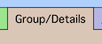
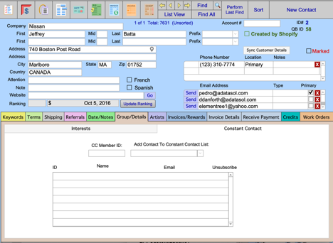
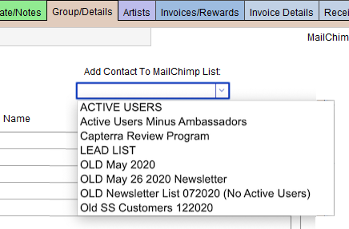
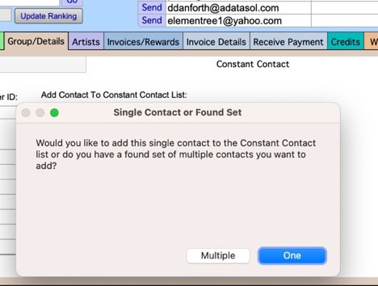
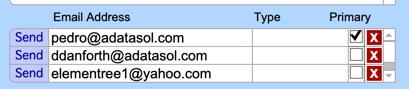
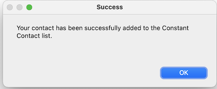
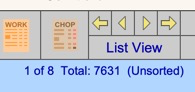
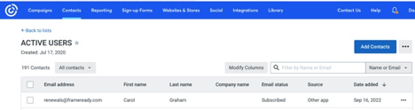

Constant Contact
Use the following steps to assign a FrameReady Contact to a Constant Contact List.
How to Assign a FrameReady Contact to a Constant Contact List
-
Open the Contacts file in FrameReady and locate any customer record.
-
Open the Group/Details tab.

-
The MailChimp and Constant Contact Lists portals are on the right hand side.
Open the Constant Contact tab.

-
To assign a FrameReady Contact to a specific Constant Contact List, click the Add Contact to Constant Contact List dropdown list.
A list of all your Constant Contact Lists appears; choose one.

-
After choosing a list, you are prompted to add just one contact email address to the list or to add multiple contacts to the list.

-
Important: When you add a contact to the Constant Contact List, only the Primary email address on the Contact record is added -- whether you are adding one contact or multiple. Make sure that you have the correct email address set as Primary on the Contact record (click the checkbox to the right of the email address in the Primary column). Only one email address can be primary.

-
If you select just one contact, FrameReady will add that selected email address on the Contact to the Constant Contact list and will create a record in the portal for that List. It will create a Contact record in your Constant Contact for the Contact’s email address if one doesn’t already exist. If one does exist already in your Constant Contact for that email address, it won’t create a Contact but it will just add that Contact to that list.

-
Important: To add more than one contact to a Constant Contact list, first perform a find for the Contacts you want to work with.
To perform a find, click the Find button, enter your search criteria, and click the Perform Find button. FrameReady finds matching records; you can verify that you have a Found Set of records by looking near the top middle of the contacts screen (near the navigation buttons) and the text will tell you how many are found in the set, e.g. 1 of 8

When adding multiple contacts to a list, the script runs and loops through each contact in your Found Set. If the contact does not have an email address, then it will be skipped. For each contact with multiple email addresses attached, the integration only adds the Primary email address. -
Once the record(s) has been added to the portal for the List/Audience, you can verify that the contact was added to your Constant Contact by logging into your Constant Contact account and going to the List that you added the Contact to.
In the Active Users for the list, the new contact is added, and is labelled Subscribed in the Email Status column. Now you know that the Contact is officially subscribed to the list.

You can remove the contact from the List just as easy as you have added the contact in FrameReady.
See: Constant Contact Remove from a List
© 2023 Adatasol, Inc.